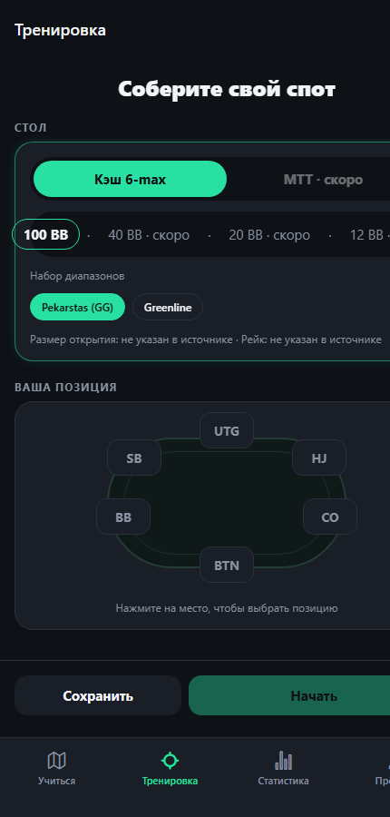
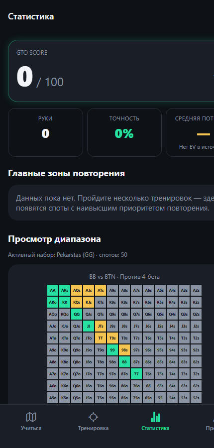

01
Чтение диапазонов
Последовательность действий, флоп и вопрос о том, чей диапазон получил больше equity.
Тренируйте решения по лицензированным диапазонам: собирайте любой доступный спот в песочнице, учитесь читать диапазоны на флопе и возвращайтесь к ошибкам по расписанию.
Версия 0.1.0-dev · 2026-07-15 · Android 7.0+
Результат каждого решения считается только из загруженных данных. В коде нет придуманных диапазонов или условий для отдельных рук.
Последовательность действий, флоп и вопрос о том, чей диапазон получил больше equity.
Стек, позиция, сценарий, оппонент и длина сессии — без лишних переключателей.
Очередь 1/3/7 дней возвращает сложные руки, но никогда не блокирует тренировку.
Совпадение с выбранным чартом и приоритет повторения. EV и bb/100 скрыты, если источник их не содержит.


SHA-256 релизного APK:
Приложение не требует аккаунта, сервера или доступа к интернету. Минимальная версия: Android 7.0+.
Образовательный инструмент для изучения префлоп-решений. Не является азартной игрой и не гарантирует выигрыш.